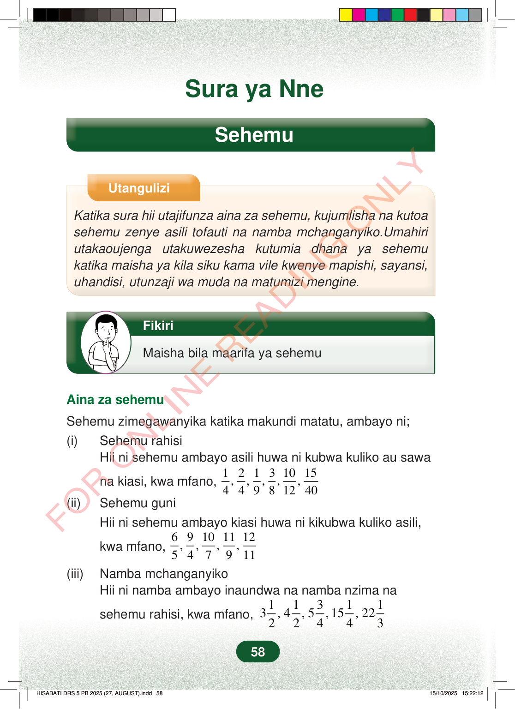

Sura ya NneSehemuUtanguliziKatika sura hii utajifunza aina za sehemu, kujumlisha na kutoasehemu zenye asili tofauti na namba mchanganyiko.Umahiriutakaoujenga utakuwezesha kutumia dhana ya sehemukatika maisha ya kila siku kama vile kwenye mapishi, sayansi,uhandisi, utunzaji wa muda na matumizi mengine.FikiriMaisha bila maarifa ya sehemuAina za sehemuSehemu zimegawanyika katika makundi matatu, ambayo ni;(i)Sehemu rahisiHii ni sehemu ambayo asili huwa ni kubwa kuliko au sawana kiasi, kwa mfano,12131015,,,,,44981240(ii)Sehemu guniHii ni sehemu ambayo kiasi huwa ni kikubwa kuliko asili,kwa mfano,69101112,,,,547911(iii)Namba mchanganyikoHii ni namba ambayo inaundwa na namba nzima nasehemu rahisi, kwa mfano,113113, 4, 5, 15, 222244358
Sura ya Nne
Sehemu
Utangulizi
Katika sura hii utajifunza aina za sehemu, kujumlisha na kutoa sehemu zenye asili tofauti na namba mchanganyiko.Umahiri utakaoujenga utakuwezesha kutumia dhana ya sehemu katika maisha ya kila siku kama vile kwenye mapishi, sayansi, uhandisi, utunzaji wa muda na matumizi mengine.
Fikiri
Maisha bila maarifa ya sehemu
Aina za sehemu
Sehemu zimegawanyika katika makundi matatu, ambayo ni; (i) Sehemu rahisi Hii ni sehemu ambayo asili huwa ni kubwa kuliko au sawa
na kiasi, kwa mfano, 1 2 1 3 10 15 , , , , , 4 4 9 8 12 40 (ii) Sehemu guni Hii ni sehemu ambayo kiasi huwa ni kikubwa kuliko asili,
kwa mfano, 6 9 10 11 12 , , , , 5 4 7 9 11 (iii) Namba mchanganyiko Hii ni namba ambayo inaundwa na namba nzima na
sehemu rahisi, kwa mfano, 1 1 3 1 1 3 , 4 , 5 , 15 , 22 2 2 4 4 3
58
Sura ya NneSehemuUtanguliziKatika sura hii utajifunza aina za sehemu, kujumlisha na kutoa sehemu zenye asili tofauti na namba mchanganyiko.Umahiri utakaoujenga utakuwezesha kutumia dhana ya sehemu katika maisha ya kila siku kama vile kwenye mapishi, sayansi, uhandisi, utunzaji wa muda na matumizi mengine.Mtoto anayefikiri, pamoja na kichwa cha habari: Fikiri, maisha bila maarifa ya sehemu.FikiriMaisha bila maarifa ya sehemuAina za sehemuSehemu zimegawanyika katika makundi matatu, ambayo ni;(i)Sehemu rahisiHii ni sehemu ambayo asili huwa ni kubwa kuliko au sawa na kiasi, kwa mfano, <math><mrow><mfrac><mn>1</mn><mn>4</mn></mfrac><mo separator="true">,</mo><mfrac><mn>2</mn><mn>4</mn></mfrac><mo separator="true">,</mo><mfrac><mn>1</mn><mn>9</mn></mfrac><mo separator="true">,</mo><mfrac><mn>3</mn><mn>8</mn></mfrac><mo separator="true">,</mo><mfrac><mn>10</mn><mn>12</mn></mfrac><mo separator="true">,</mo><mfrac><mn>15</mn><mn>40</mn></mfrac></mrow></math>(ii)Sehemu guniHii ni sehemu ambayo kiasi huwa ni kikubwa kuliko asili, kwa mfano, <math><mrow><mfrac><mn>6</mn><mn>5</mn></mfrac><mo separator="true">,</mo><mfrac><mn>9</mn><mn>4</mn></mfrac><mo separator="true">,</mo><mfrac><mn>10</mn><mn>7</mn></mfrac><mo separator="true">,</mo><mfrac><mn>11</mn><mn>9</mn></mfrac><mo separator="true">,</mo><mfrac><mn>12</mn><mn>11</mn></mfrac></mrow></math>(iii)Namba mchanganyikoHii ni namba ambayo inaundwa na namba nzima na sehemu rahisi, kwa mfano, <math><mrow><mn>3</mn><mfrac><mn>1</mn><mn>2</mn></mfrac><mo separator="true">,</mo><mn>4</mn><mfrac><mn>1</mn><mn>2</mn></mfrac><mo separator="true">,</mo><mn>5</mn><mfrac><mn>3</mn><mn>4</mn></mfrac><mo separator="true">,</mo><mn>15</mn><mfrac><mn>1</mn><mn>4</mn></mfrac><mo separator="true">,</mo><mn>22</mn><mfrac><mn>1</mn><mn>3</mn></mfrac></mrow></math>Sehemu zenye asili tofautiSehemu zenye asili tofauti ni zile ambazo zinakuwa na viwango tofauti vya namba ya chini, kwa mfano,<math><mfrac><mn>1</mn><mn>2</mn></mfrac></math>na<math><mfrac><mn>1</mn><mn>3</mn></mfrac></math>zina asili tofauti ambazo ni 2 na 3.Kujumlisha sehemu zenye asili tofautiIli kujumlisha sehemu zenye asili tofauti, anza kutafuta Kigawe Kidogo cha Shirika (KDS) cha asili hizo.Kisha andika kila sehemu kama sehemu sawa na KDS kama asili mpya.Jumlisha kiasi bila kubadili asili.Mwisho rahisisha sehemu iliyopatikana ikiwa inawezekana.